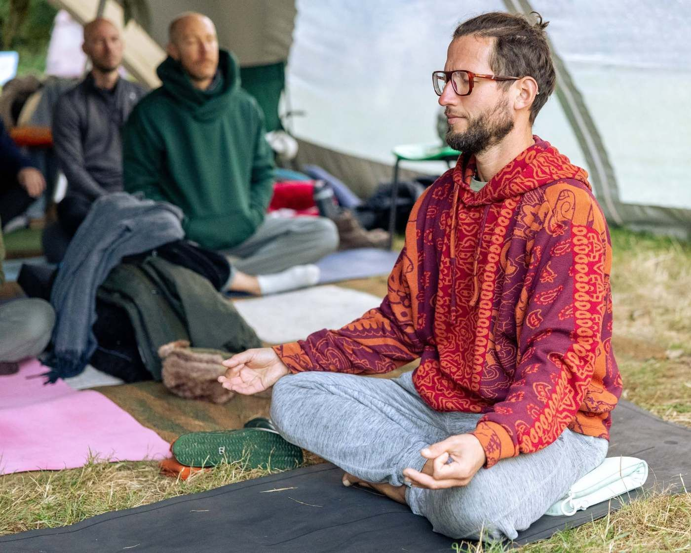

Your First Silent Retreat: What Really Happens, Day by Day
A day-by-day guide to your first silent meditation retreat: arrival, the hard days, the turning point, and leaving. Honest advice from a vipassana teacher.
Read · 3 min
Packing for a silent retreat is simple, once you know one thing: you'll be outside at dawn, sitting still. Even in June, an English meadow at 5am is cold.
This list is for our retreats at Hardwick, where you camp, but most of it works anywhere.
If you rent a pre-erected tent or a bell tent with a framed bed, check what bedding is included. Bedding is not included by default.
Avoid clothes with loud slogans or bright prints. Not a rule, just less to look at.
You switch it off for the week and keep it put away. Before you come, give your family the retreat's contact details in case of a real emergency.
People worry about this more than anything. Then, by day three, they forget the phone exists. It's one of the greatest gifts of the week.
A beginner's mind. Whether this is your first retreat or your tenth, try not to arrive with a plan for what you'll achieve. Come with an empty bowl, and let the week fill it.
Ready? See the 2027 dates and booking, or read what to expect on your first silent retreat.
Practise this with a teacher, in silence, by the river. Seven days at Hardwick, 2027.
Book a placeHave a question about the practice? Ask Ananda, our Dhamma assistant.
A day-by-day guide to your first silent meditation retreat: arrival, the hard days, the turning point, and leaving. Honest advice from a vipassana teacher.
Read · 3 min
Looking for a silent meditation retreat near London? Our 7-day vipassana retreats are at Hardwick Estate in the Chilterns, 40 minutes by train from Paddington.
Read · 3 min
Never meditated? You can still do a silent vipassana retreat, and a clean slate can even help. A teacher answers the common worries: sitting, silence, emotions, sleepiness, and whether you'll "fail".
Read · 3 minNew dates, early-bird places and short teachings from Dmitry, a few times a year. No spam; unsubscribe any time.